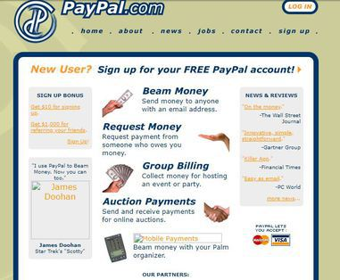
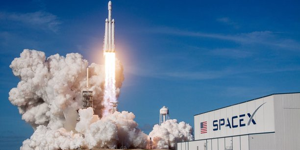
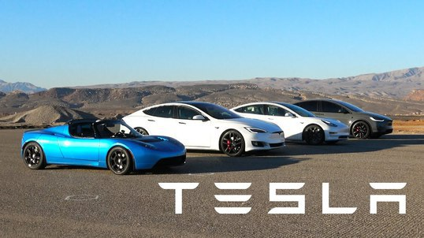
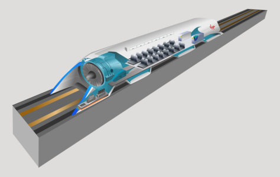

Projets et Entreprise
Elon Musk a été à l'origine de nombreux projets, plus ou moins ambitieux. En voici une liste non exausthive : Cette liste est un sommaire interactifPaypal
Après un stage dans une banque, il est choqué par la similitudes des services proposés par les banques "traditonnelles", il décide alors avec des amis de créer un banque en ligne : C'est la naissance de X.com. Dans la même rue, deux étudiants ont égalements lancé un start-up : Confinity. Les relations entre les entreprises se passaient très bien au début, mais elles se détorient lorsque Confinity lance à son tour un service de payement : Paypal. Après quelques conflit, les deux sociétés se réconcilieent et fusionnent pour ne former qu'une : Paypal.
La société se fait racheter en 2002 par Ebay pour 1,5 milliars de dollars. Avec ses actions, Elon touche 250 millions, de quoi lancer de nouveaux projets.

La page d'accueil de Paypal en 2000.
SpaceX
Fort de succès de Paypal et estimant que le manque d'ambition de la NASA est désastreux, Elon Musk fonde sa troisième société SpaceX. Elle conçoit et produit des véhicules de lancement spatiaux avec l'objectif d'abaisser les coûts, aujourd’hui à 2000$ par Kg et à long terme de rendre possible la colonisation de Mars. SpaceX a développé les fusées Falcon 1 et Falcon 9 ainsi que le vaisseau cargo “Dragon Crew” et un vaisseau marsin en développement “Starship”.
Dès 2012, SpaceX décroche un contrat pour ravitailler la station spatiale internationale, ce qui signe l'arrivée de Space X dans la cour des grand. Enfin en décembre 2015, SpaceX réalise la première récupération du premier étage, une surprise pour tout le monde car c’est la première fois qu'une entreprise ou organisation gouvernementale y arrive. Ce exploit s'inscrit égalememet dans une démarche écologique.

Une fusée de Musk qui décolle.
Tesla
Musk est plus connu du grand public pour être le dirigeant de Tesla, qui a déjà conçu 4 modèles de voiture électrique :
- Modèle S
- Modèle 3
- Modèle X
- Modèle Y
C'est qu'on peut observer le coté "Trollesque" de Musk tant apprécié des internaute : Les initiale de ces modéles forment le mot "S3XY = SEXY". Plus sérieusement, Musk a pour ambition de développer le pilotage automatique, de concevoir des camions électriques ou encore de réussir à fabriquer de batteries à la durée de vie plus importantes. Cela s'inscrit dans sa démarche écologique.

Les différents modèles conçus par Musk
The Boring Company
The Boring Company est une société de Musk qui développe le futur de la mobilité :
- Création d'un tunnel sous Los-Angeles afin de pouvoir éviter les bouchons
- Mise en place prochaine d'un service de transport hyper-rapide entre le centre-ville de Chigaco et son aéroport, toujours en souterain, la spécalité de l'entreprise.
Les premiers test sont très prometeur : A terme, un trajet de 45min pourra être réduit à 5min. Pour se faire connaitre et se financer, l'entreprise à vendu des casquettes et des lances-flammes.
Vidéo de démonstration du tunnel. La vitesse maximale est de 204km.
L'Hyperloop
Toujours dans le domaine des tunnels et des trucs qui vont très vite : Voici l'Hyperloop. C'est un nouveau mode de transport pouvant aller à plus de 1200km/h en faisant circuler des trains aérodynamiques sur des coussins d'airs dans de longs tunnels. Ce projet permettra à terme d'effectuer le trajet Los-Angeles / Las-Vegas en 30min au lieu de 2h en train classique.
On peut imaginer a terme une installation sous marine : Cela serait certes équivalent à l'avion en terme de vitesse, mais beaucoup moins pollueur.

Schéma du projet
Retrouvez toutes nos sources en cliquant ici : "Sources et Mentions Légales"